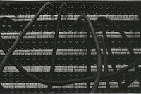

"A deserved tribute that puts us inside the music, and the head space, of a great, lost band. A well-sourced account of a perfect, broken dream."
Drew DeNicola
BIG STAR: Nothing can hurt me (2013, MAGNOLIA PICTURES)
NATURAL SOUL BROTHER (in production)

TELEVISION
BRANDED CONTENT: Vice Inc.
PROMOTIONAL
EDIT REEL: Commercial
ABOUT